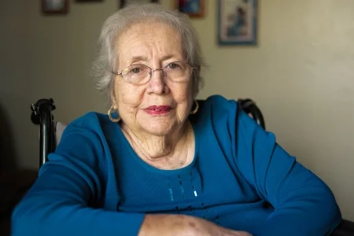
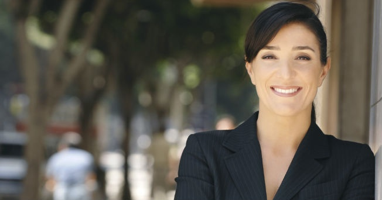

Con más de 10 años de experiencia en el rubro, hemos llevado tranquilidad a nuestros clientes, de manera rápida y efectiva. Nuestros profesionales, totalmente dedicados a brindar un servicio de calidad, han logrado resolver los casos más complejos en materia hereditaria sin las usuales y tan lamentables demoras de cualquier proceso judicial. Acá te compartimos algunas opiniones de nuestros clientes sobre nuestra tarea.
Ernesto Mazzini

Antes de contactar al estudio LF había estado esperando muchísimo tiempo un proceso de sucesión que se me hizo eterno. Gracias al trabajo de Silvia y Adriana pude resolverlo en muy poquito tiempo.
Susana Hruby

Hace un par de años decidí que era momento de empezar a planificar ante cualquier eventualidad de la vida. Contacté diversos estudios que en teoría ofrecían soluciones rápidas y buen asesoramiento en materia de planificación hereditaria, pero no fueron buenos profesionales. Luego conocí a Duilio y Adriana, quienes me asesoraron muy bien y resolvieron todo en materia de pocos meses.
Lorena Silvermann

En uno de los momentos más duros de mi vida, cuando partió mi papá, me la pasé buscando soluciones en materia de sucesión. Me encontré con muy pocos profesionales realmente capacitados a nivel humano. Silvia, Duilio y Adriana son excelentes personas y entendieron mis necesidades y las de mi mamá y nos acompañaron en todo el proceso.